|
|
| sponges text index | photo index |
| Phylum Porifera |
| Orange
sprawling sponge Clathria reinwardti* Family Microcionidae updated Oct 2016 Where seen? This large sprawling bright orange sponge is commonly seen on some of our Southern shores, growing in sheltered shores on coral rubble in or near seagrass areas and in man-made lagoons on our Southern Islands. Features: 20-30cm. Often looks like sprawling tree roots, branching and spreading horizontally along the surface. Stems may be slender, long, angular and sparsely branched, or short and regularly branched with short upright portions. Or series of flattened upright lobes. Also combinations of these different shapes in the same sponge. Texture smooth with a semi-translucent surface skin that collapses when out of water to form folds and ridges. At intervals along the top portion of the sponge there are lumps or short fat cones with small holes (0.5cm) at the tips. The holes have membranous lips and water channels radiate from these holes. The holes are more obvious when the sponge is submerged. Out of water, the hole are closed as the lips collapse, and the area around it puckers into rdiges. Colour usually bright orange, also paler orange. |
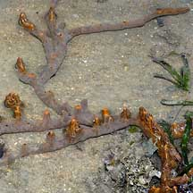 Pulau Semakau, Mar 05 |
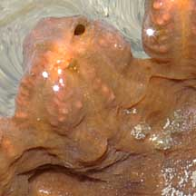 Cone with holes at the tip. |
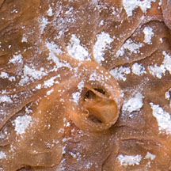 Hole with membranous lips and water channels radiating out from the hole. |
|
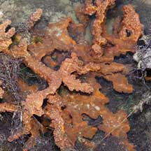 Pulau Semakau, May 07 |
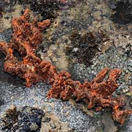 Cyrene Reef, Jun 08 |
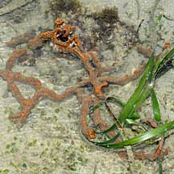 Beting Bemban Besar, Jun 09 |
*Sponge species are difficult to positively identify without close examination.
On this website, they are grouped by external features for convenience of display.
| Orange sprawling sponges on Singapore shores |
On wildsingapore
flickr
|
| Other sightings on Singapore shores |
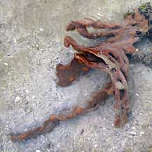 Terumbu Semakau, May 10 |
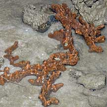 Pulau Pawai, Dec 09 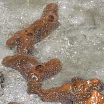 |
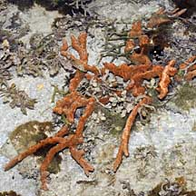 Terumbu Berkas, Jan 10 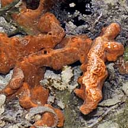 |
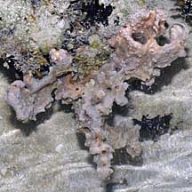 Pulau Berkas, May 10 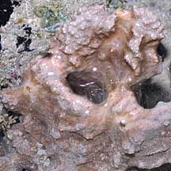 |
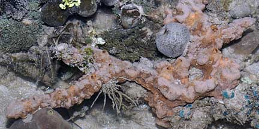 Pulau Senang, Jun 10 |
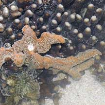 Terumbu Salu, Jan 10 |
|
|
Links
References
|